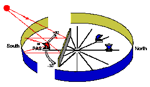
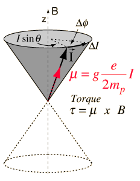
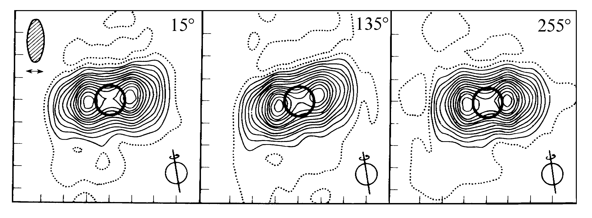

Радиоастрономия
math-macros \(\def\averg#1{\langle#1\rangle}\) \(\def\fftmap{\mathfrak F}\) \(\def\fftres#1{\widetilde #1}\) \(\def\Re#1{\mathop{\operatorname{Re}}#1}\)
1
- Радиодиапазон
- сверху -- 1мм, но ALMA смотрит и субмм (0.3мм). Это \(\nu = 300\text{ ГГц}\), \(E = 1.24 \text{ мэВ}\)
- снизу -- формально бесконечность, но реально 10-100м. Это \(\nu = 3-30\text{ МГц}\).
2
Радиоволны -- естественные границы:
(вода) 1мм -- 10-100м (плазма в ионосфере)
вода поглощает, в плазме становится мнимым показатель преломления. Но если забраться высоко, то можно и в субмм.
3
Яркостная температура: \(T_b = \frac{\lambda^2}{2k} I_{\nu}\), эффективная: \(T_e = \sqrt[4]{\frac{L}{4\pi \sigma}}\)
4
Карандашная -- просто кружочек (получается от тарелки), а ножевая вытянутая (от Крауса\РАТАНа)
5
Разрешение радиотелескопа -- угол при котором пара звезд ещё не сливаются. Если как-то конкретнее, то полуширина (на половине интенсивности) главного лепестка: \(\theta_{0.5} = k\,\tfrac{ \lambda}{D}\), а \(k\) зависит от приёмника.
6
Эффективная площадь: eff-area
\[ A_\nu = P_\nu/S_\nu \tag{1} \]Тут \(S\) --- пришедшая интенсивность, а \(P\) --- зарегистрированная мощность. Дальше стащено с английской вики.
Как нетрудно заметить, излучённая мощность связана с поглощенной (если потерь не было)
\[ S_\nu^e = P^e_\nu \, \frac{G}{4\pi r^2}, \quad P^r_\nu = S_\nu^r A_\nu \quad \Rightarrow \quad P^r_\nu = \frac{AG}{4\pi r^2} \, P^e_\nu \]Если теперь излучить туда-сюда, пользуясь теоремой взаимности, получится, что \(\frac{A}{G} = \textrm{const}\), посчитав для чего-нибудь получим и формулку: \(A = G\,\tfrac{\lambda^2}{4\pi}\). Стоит заметить, что здесь все величины в телесном угле.
Эффективная площадь по сути параллелепипед, в который засунули весь объём под диаграммой направленности (это не совсем она) с высотой равной мощности в максимуме. А поскольку обычно к краям всё падает и недооблучается, эффективная площадь \( < \) реальной.
не очень понятно как сравнивать с площадью
7
Интегрируем по углам штуки из #6, объявляем \(T_a\colon P = k T_a\) :
\[ T_a = \frac{1}{4\pi} \int_{4\pi} G \, T_b \, d\Omega= \langle T_b\rangle \, \frac{ \Omega_{\rm src}}{ \Omega_{\rm ant}} \]кажется, в (1) забыли \(\tfrac 12\). И ещё всё зависит от размеров источника. Если он большой по сравнению с лепестком диаграммы направленности, то \(T_a \approx \averg{T_b}\). Здесь усреднение по \(\Omega_{\rm ant}\) и он сокращается.
глянуть Краусс, стр 68, там получше местами.
8
Шумовая температура:
- шумы атмосферы, главный и боковые лепестки
- космические шумы, главный и боковые лепестки
- излучение Земли, боковые лепестки
- излучение самой антенны
\(T_n = T_n^0 + \delta T_n\) ({постоянные шумы} + {переменные шумы}), \(P_n = k T_n\).
9
Куда делся телесный угол источника, я не понял. Будем считать, что \(F\) переопределили мы. Тогда уравнение антенного сглаживания выглядит так: (тут по-другому, если что)
\[ T_a(x,y) = \iint F(x'-x, y'-y)\, T_b (x', y') \, dx'\,dy' = A \ast T_b \]10
дельту подставить в #9, как раз получается \(A\).
12
Сглаживает распределение яркостной температуры, очевидно.
11
Здесь \(\fftres A\) и есть пространственно-частотная характеристика. Откуда-то следует (врочем, это почти логично, \(I \propto E^2\)), что
\[ \fftres{A} \propto \iint \varepsilon(\xi/\lambda + u, \eta/\lambda + v)\, \varepsilon^*( \xi/\lambda, \eta/\lambda) \, d\xi\, d\eta \]Здесь \( \varepsilon\) --- распределение поля (\(E\)) в раскрыве, \(\xi,\eta\) --- координаты после пространственного преобразования Фурье, а потом их ещё зачем-то нормируют на длину волны.
здесь снова какая-то дичь.
Непонятно, можно ли думать о размерностях (углы же)
13
Антенна не регистрирует высокие частоты \( \Leftrightarrow \fftres{A}\) имеет ограниченный носитель. Это как раз похоже на сглаживание мелких деталей (в #12)
14
- Теорема Котельникова
- Рядом с временным разрешением \(\Delta t\) можно представить сигнал с частотами \(\nu \leq \nu_c = \frac{1}{2 \Delta t}\)
15
см #9
16,17,18
OBNJ?
19

Диаграмма направленности -- этакий главный лепесток. Короче, судя по всему, наложение
дифракции на круглой дырке и дипольного излучателя. Но вообще <?>.
А разрешение как и обычно \(\sim \frac{\lambda}{D}\)
20
Основная мысль --- кусок параболоида собирает излучение туда же, куда и весь параболоид. А реализации разные:
- Система Крауса --- параболическая полоска неподвижна, а плоский отражатель направляет свет от разных точек неба в облучатель.
- АПП (антенны переменного профиля) --- подвижная параболическая полоска из щитов (элементы умеют наклоняться и вращаться), облучатель умеет ездить на рельсах.
21
Принципы в предыдущем, а характеристики такие:
| Диаметр кольца | 576м |
| Размер элемента | \(11.4\times2.0\)м |
| \(\lambda\) | \(1\) -- \(50\)см |
| Разрешение | \(2''\) -- \(400''\) |
Можно условно поделить на 4 сектора, для каждого свой облучатель. Южный используют как систему Крауса для наблюдений Солнца. Ещё умеют работать все вместе с коническим облучателем.

22
Двухэлементный интерферометр Майкельсона --- простой, и можно получить хорошее разрешение (в одном направлении).
Что-то на тему разности фаз и диаграммы направленности:
\begin{align} \psi &= \frac{2\pi}{\lambda} D \sin \varphi = 2\pi s\sin \varphi \\ F(\varphi) &\propto 2 E_0^2 (1 + \cos(2\pi s \sin \varphi)) \sim 2 E_0^2 (1 + \cos(2\pi s\varphi)) & (\varphi \ll 1) \end{align}23
- Функция видности \(V\) --- \(R = F\circ(-\operatorname{id}) \ast T_b =: F_0\,(1 + \Re{V})\)
- Физический смысл \(V\) --- \(|V| = \fftmap[T_b]\) (модуль --- спектр яркостного распределения)
24,25
Нужно набрать точек на плоскости, чтобы смочь сделать обратное преобразование Фурье.
- Используем вращение Земли --- кружок на небесной сфере
- Много антенн \(⇒\) много баз \(⇒\) много кругов на небесной сфере. Более строго --- лучшее заполнение \((u,v)\)-плоскости.
- Не очень важно какие антенны, можно маленькие.
- Некратные расстояния между антеннами (различать пики).
- Антенны далеко --- лучше разрешение
- Не дотянуть провод --- записывать данные
- Точное время! (\(\nu^{-1} \sim 10^{-8}\))
- Точные расстояния между антеннами (\(\sim \lambda\)) (проще наоборот)
26
Само уравнение переноса имеет вид
\[ \frac{dI_\nu}{dr} = - \kappa_\nu I_\nu + \varepsilon_\nu \]Для равновесной плазмы \(\tfrac{\varepsilon_\nu}{\kappa_\nu} = B_\nu(T)\), \(d\tau = \kappa_nu dr\) Так что решение будет выглядеть как-то так:
\[ I_\nu = \int_0^{\tau_\nu} B_\nu \bigl(T(\tau_\nu')\bigr) e^{-\tau_\nu'} \, d\tau_\nu' + I_\nu^0 e^{-\tau_\nu} \]можно забить на свободный член и посмотреть что будет в предельных случаях (по \(\tau\), по \(\lambda\) мы и так в длинноволновой области):
\begin{align} && T_b &= \int_0^{\tau_\nu} T_e (\tau_\nu') e^{-\tau_\nu'}\, d\tau_\nu'\\ \tau_\nu &\ll 1 & T_b &= T_e \tau_\nu\\ \tau_\nu &\gg 1 & T_b &= T_e \end{align}27
Сначала нужно вспомнить кусок электрода
- Обозначим
- Плазменная частота: \( \omega_p = \sqrt{\tfrac{4\pi e^2 N}{m}}\). (здесь \(N\)~--- концентрация)
- Комплексная диэлектрическая проницаетмость: \(\varepsilon' = \varepsilon_1 - i \frac{4\pi \sigma}{ \omega}\)
- Показатель преломления: \(n'^2 = (n - i k)^2 = \varepsilon'\)
- Коэффициент затухания (~частота столковений): \(\gamma\) (~\(\nu_c\))
Тогда
\begin{align} \varepsilon &= 1 + \frac{\omega_p^2 (\omega_0^2 - \omega^2)}{(\omega_0^2 - \omega^2)^2 + \gamma^2 \omega^2} &&\xrightarrow[ \omega \gg \omega_0]{}& &1 - \frac{\omega_p^2}{\omega^2 + \gamma^2} &&\sim & &1- \left(\frac{\omega_p}{\omega}\right)^2\\ \sigma &= \frac{1}{4\pi} \, \frac{\omega_p^2 \gamma \omega^2}{(\omega_0^2 - \omega^2)^2 + \gamma^2 \omega^2} &&\xrightarrow[ \omega \gg \omega_0]{}& &\frac{\omega_p^2 \gamma}{4\pi\,(\omega^2 + \gamma^2)} &&\sim & &\frac{\gamma}{4\pi} \,\left(\frac{\omega_p}{\omega}\right)^2 \end{align}Можно и для показателя преломления записать (при малых \(\sigma\))
\[ k = \frac{2\pi \sigma}{n\omega} \qquad n = \sqrt{1 - \left(\frac{\omega_p}{\omega}\right)^2} \]Припомнив, как распростаняется волна (\(\propto e^{\mathbf{k} \cdot\mathbf{r}}\), \(\mathbf{k} = n' \mathbf{\hat{n}}\)), понимаем, что при частотах больше плазменной всё отражается.
28
При добавлении магнитного поля возникает анизотропия~--- \(\varepsilon\) начинает зависеть от направления.
Здесь можно вразумительно рассмотреть только 2 типа распространения распространение.
- \(\mathbf{k} \parallel \mathbf{H}\) -- показатели преломления для "обыкновенной" и "необыкновенной" волны содержат \(\omega\pm\omega_H\) в знаменателях, круговая поляризация в разных направлениях. При \( \omega = \omega_H\) необыкновенная гасится \(⇒\) излучение поляризовано.
- \(\mathbf{k} \perp \mathbf{H}\) -- 2 перпендикулярно линейно поляризованные компоненты, обыкновенная распроняетя как обычно, а у необыкновенной есть особенность в \(\omega = \sqrt{\omega_p^2 + \omega_H^2}\). Так что здесь тоже может получиться полностью поляризованное излучение.
В кристаллах тоже разные компоненты по-разному поляризованы, только всегда линейно. Так что круговая поляризация получается не как поглощение одной волны, а как сложение двух линейно поляризованных.
Ну, и показатель преломления в плазме \(< 1\). Нет ничего страшного, в том что фазовая скорость \(> c\).
29
Если считать, что плазма чисто равновесная и водородная, то
\[ \kappa_\nu = 0.01\, \frac{N_e^2}{T_e^{3/2} \, \nu^2} \, \Lambda \qquad \tau_\nu = \int_0^\ell \kappa_\nu \, d s \propto \nu^{-2} \]В \(\Lambda\) входит логарифм \(T_e^{3/2}\) и \(\nu\), так что она почти константа.
В качестве дополнения, можно ещё подумать про яркостную температуру. Припомнив, что \(T_b = T_e (1-e^{-\tau_\nu})\), получим \(T_b \propto \nu^{-2}\) в оптически тонкой среде и \(T_b \sim \mathrm{const}\) в толстой.
30

- Гирочастота: \(\omega_H = \tfrac{eH}{mc}\), если точнее, то \(\omega_H = \tfrac{eH}{\gamma mc}\) Это что-то вроде наблюдаемой частоты вращения электрона в МП. (видимо, мы смотрим \(\perp \mathbf{H}\), раз \(\sin \chi\) нету)
- Ларморова частота: вообще про прецессию момента импульса в магнитном поле, \(\omega_L = \frac{geH}{2m}\), \(g\) по сути определяется этим соотношением.
Можно немного глянуть тут
31
Магнитные поля, релятивистские скорости (точнее, электроны, разогнанные до них, в \(I_\nu\) масса в знаменателе, всё кроме электронов будет не так светить)
32,33
Радиоизлучение Луны --- чисто тепловое. Так что важно, насколько глубоко прогревается лунная повехность. Для коротких волн никакого сдвига фаз нет, глубоко высоким температурам не проникнуть (не успеют), так что излучает тонкий поверхностный слой с малой темплоёмкостью. Если верить Мартынову, то на \(\lambda > 10\)см радиоизлучение Луны вообще не зависит от фазы.
Отсюда понятно, что на дециметровых волнах в новолуние Луна должна быть ярче. В полнолуние, видимо, наоборот, т.к в приближении Релея-Джинса \(I_\nu \propto T\nu^2\).
По идее, максимум радиоизлучение будет своим на на каждой длине волны. В среднем, он отстает на несколько дней от полнолуния. Можно ещё полистать такую статейку
34
Спектр радиоизлучения Венеры довольно странный.
- на длинных волнах (\(10^0\)–\(10^1\)см) ― \(T \sim 600\)K
- на коротких волнах (\(10^0\)мм) ― \(T \sim 300\text{–}400\)K
Поскольку длинные волны поглощаются атмосферой хуже, понятно, что такая температура у поверхности Венеры. К тому же, это проверили, померив яркостую температуру на разных расстояниях от планеты. Причина всей этой жести — парниковый эффект.
35
- Нетепловое излучение — дециметровое (\(10^{-1}\)см). Судя по яркостой температуре и поляризации это излучают бедные релятивистские электроны в радиационных поясах Юпитера. Т.е. источник связан с магнитосферой.

- Спорадическое излучение — декаметровое (\(10^1\)м). Генерируется в магнитосфере, причем значительная часть в "трубке" идущей от Юпитера к Ио. Что это такое — до конца не ясно. Например, предлагаются плазменные волны, модулируемые излучением Солнца или движением Ио в магнитосфере Юпитера.
тут рассуждения про мазеры, но не очень понятно откуда.
Ещё есть статья в которой утверждается, что там рвётся магнитное поле
и индукция создаёт электрическое поле, которое и ускоряет электроны.
36
Потемнение к краю в оптике — в центре диска видим более глубокие и горячие слои. \(\tau = 1\) быстрее набирается к краю диска, так что глубина, температура и яркость оказываются меньше чем в центре.
Потемнение в метровых волнах — здесь как и в оптике оптическая толщина велика, так что мы видим сразу \(T_e\) (см #26). Но вот как распределена температура — не очень ясно. Так что видимо спасёт только преломление излучения в плазме. Тогда ближе к центру поток правда будет расти.
Уярчение в сантиметровых — оптическая толщина короны в них невелика, так что \(T_b = T_e \, \tau_\nu\). А само Солнце непрозрачно. Так что вблизи края диска яркостная температура растёт раза в 2.
37
В оптике температура просто ниже, а в радиодиапазоне излучают разогнанные электроны в магнитном поле. По сравнению с фоном, они сильно ярче.
38
Динамический спектр --- зависимость \(\nu\) от \(t\).
(простите, просто скопировано из гаишевских лекций)
- Шумовая буря. Несколько суток, метровые волны. Куча всплесков.
- результат особо сильных хромосферных вспышек (один раз в несколько суток). Сильнее всплесков III типа, узкополосные. Дрейфуют по частоте к низким частотам, \(\frac{d \omega}{dt} \sim 200\) кГц/с. Чаще всего наблюдаются на метровых волнах, изредка на дециметровых и сантиметровых.
- Наблюдаются на дециметровых, метровых и более длинных волнах. Всплески по времени изолированные, на фиксированной частоте длительность несколько секунд. Излучение узкополосное. Спектр всплеска обладает дрейфом по частоте со скоростью в среднем ~10 МГц/с. Происходят во время взрывной фазы хромосферных вспышек (даже очень слабых) \(⇒\) ежедневно регистрируется несколько таких всплесков.
Почему, собственно происходит дрейф? II, III тип возникает в следствие плазменных колебаний. А они происходят на \(\omega_p\). Поскольку концентрация убывает от Солнца, \(\omega_p\) тоже убывает. Отсюда и уменьшение частоты.
39
- Галактическое магнитное поле
-
Заряженные частицы (= космические лучи)
Откуда они и почему разогнаны?
- следы вспышек SN?
- взамиодействие с межзвёздными облаками с вмороженным полем?
не понятно, существует ли это гало вообще.
40
Радиоспектр горячих туманностей может иметь синхротронный вид Характерный излом возникает из-за "высвечивания" быстрых электронов. Так что так можно определять возраст (если только не происходит подпитка высокоэнергетическими частицами откуда-нибудь, от нейтронной звезды, например)
41
- сверхтонкое расщепление, очень маловероятно. Нужны низкие концентрации.
- Излучает нейтральный атом водорода. А его очень много. Так что наблюдается, несмотря на низкую вероятность.
42
Газ "собирается" в рукава по тому же механизму, что и звезды. А скорости и концентрации можно определить из эффекта Допплера.
43
Основная причина -- мазерное излучение. В молекулярных облаках часто образуются звезды. В итоге, либо столкновения, либо излучение от молодых звёзд "накачивает" облако и оно начинает работать как мазер.
44
У Туманности Ориона -- обычный тормозной спектр в равновесной плазме. У Крабовидной Туманности -- синхротронный спектр, линейный с небольшим изломом (ещё не высветилась) http://www.astro.utu.fi/~cflynn/astroII/l4B.html
Там даже картинка есть для Ориона и Кассиопеи.

Книжки
- Краус, Радиоастрономия
- Конникова, Лехт и кто-то ещё, Практическая радиоастрономия
- Рудницкий, (гаишевские лекции)
- Мартынов, Курс теоретической астрофизики